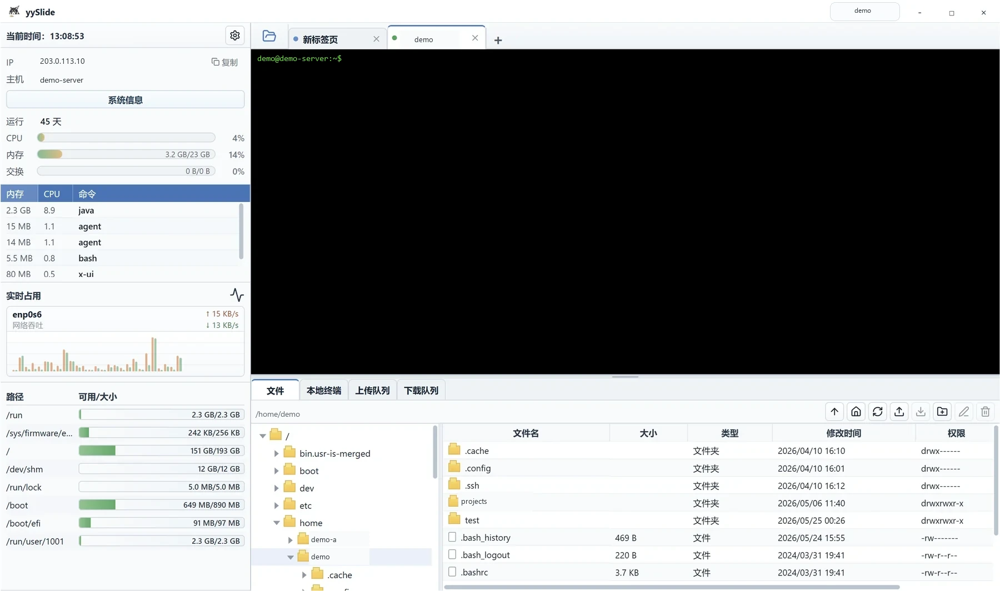
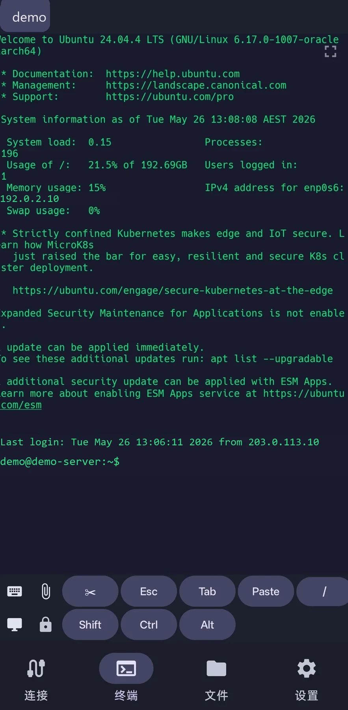
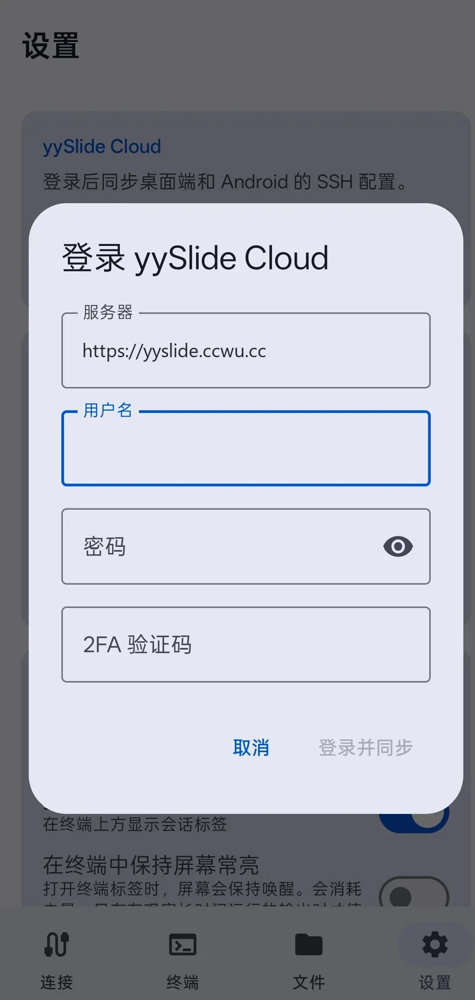

实时监控
CPU、内存、交换分区、网络吞吐、进程列表集中展示，远程机器状态一眼确认。
Windows / Android / Cloud Sync
yySlide 把 SSH 终端、SFTP 文件、实时监控和加密同步放进一个轻快的跨端工作台。开机、连上、处理，然后继续移动。

Mobile Terminal
Android 端保留终端快捷键与干净的深色命令行体验。Esc、Tab、Ctrl、Alt、Paste 都在手边，临时排障不用再找电脑。

Desktop Control Center
桌面端像一块服务器驾驶舱：左侧看机器状态，中间敲命令，下方处理文件传输。少切窗口，少开网页。
CPU、内存、交换分区、网络吞吐、进程列表集中展示，远程机器状态一眼确认。
路径、文件表、上传下载队列放在同一个视图，处理配置和日志更直接。
Windows 上整理连接，Android 上继续使用；Cloud 负责安全地把配置带过去。

yySlide Cloud
Cloud 服务只保存加密 vault。登录、2FA、恢复码与实时 SSE 刷新负责账号和同步，客户端仍掌握连接数据的解密边界。
GET /health POST /v1/auth/login GET /v1/vault/events PUT /v1/vault